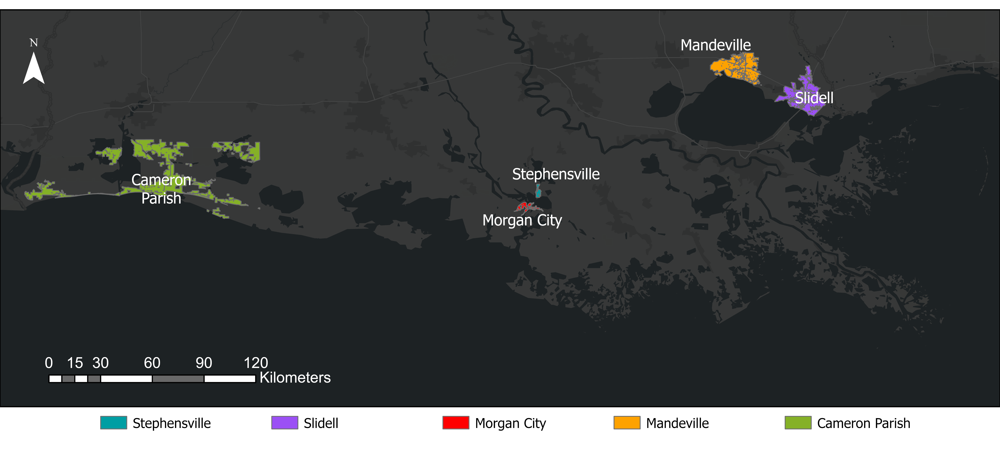

This reference map shows the locations of all communities included in this project. Only populated areas highlighted.
This project is an extension of "Bridging Knowledge to Action: Using Data to Develop Equitable Outcomes or Solutions to Climate Hazards and Other Disasters", which was a partnership between Purdue University and The Water Institute. The funding for this project came from the Gulf Research Program (GRP) as part of the National Academies. A decision support system was created through this project and can be accessed via this project link.
Use the dropdown menu below to navigate to the interactive accessibility maps. Percentages in pop-up labels represent the percentage of population within that community, while the percentage labels on the graph represent among the shown communities in the map (gray areas) what percentage of total population is served by the selected facility as primary and secondary facility. Blue circles represent facilities that serve as the primary facility for at least some portion of the population, while orange circles represent facilities that serve only as secondary facilities. Gray areas are populated areas we used in this project.